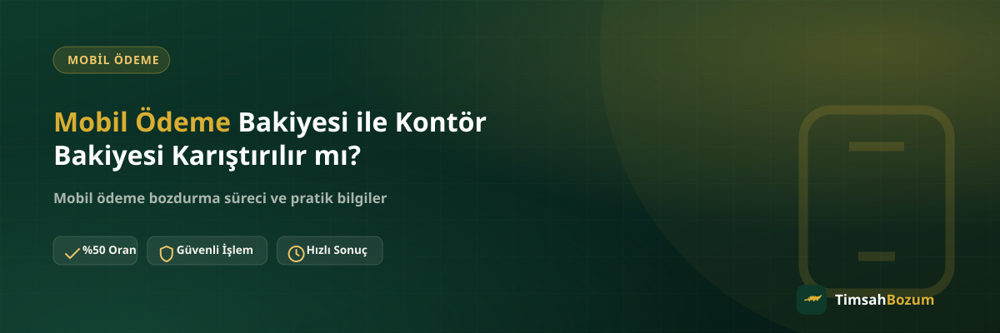

Hattında hem kontör hem mobil ödeme bakiyesi görünce bunları aynı cüzdanmış gibi düşünmek kolay bir hata. Oysa ikisi farklı amaçlarla oluşan, farklı yerlerde harcanan ve bozum açısından da farklı muamele gören iki ayrı tutar. Bu karışıklık, kullanıcıların yanlış bir beklentiyle bozum talep etmesine ya da elindeki bakiyeyi değerlendiremediğini düşünmesine yol açabiliyor.
Kontör ile Mobil Ödeme Bakiyesi Neden Karışır?
Karışıklığın en büyük nedeni, ikisinin de aynı telefon hattı üzerinde görünmesi ve çoğu operatör uygulamasında yan yana listelenmesi. Kontör konuşma, SMS ve bazı internet paketleri için harcanan, önceden yüklenen bir bakiyeyken; mobil ödeme bakiyesi dijital içerik ve hizmet satın alımlarının biriktirdiği, faturaya yansıyan ayrı bir tutar. Aynı ekranda görünmeleri, tek bir bakiye gibi algılanmalarına neden oluyor.
İki Bakiye Arasındaki Fark Nedir?
Kontör, hattına yüklediğin ya da paketinle gelen ve doğrudan iletişim hizmetleri (arama, SMS, bazı internet paketleri) için harcanan bir bakiye. Mobil ödeme bakiyesi ise oyun içi satın alma, uygulama aboneliği veya dijital ürün alışverişlerinde "faturama yansısın" seçeneğiyle oluşan, operatörün sana tanıdığı bir harcama limitinden doğan tutar. Biri anlık ve önceden ödenmiş, diğeri sonradan faturalanan bir borç niteliğinde.
Kontörümü Bozdurabilir miyim?
Hayır. Bozum hizmeti yalnızca mobil ödeme bakiyesi için geçerli; kontör bakiyesi operatörün kendi iç sistemine ait bir kullanım hakkıdır ve nakde çevrilebilecek bir yapıda değildir. "Kontörüm var, bunu da bozdurabilir miyim?" sorusu WhatsApp'ta sıkça geliyor; cevap her zaman aynı: bozdurulabilen şey hattına tanımlı mobil ödeme limiti ve bu limitle oluşmuş bakiyedir, kontör değil.
İkisini Nasıl Ayırt Edersin?
Operatör uygulamanda veya hat sorgulama menüsünde iki bakiye genelde ayrı başlıklar altında listelenir: biri kontör veya paket kullanımı, diğeri mobil ödeme ya da dijital hizmet limiti şeklinde adlandırılır. Fatura detayında da bu ayrım korunur; mobil ödeme harcamaları ayrı bir kalem olarak görünür. Emin değilsen, ekran görüntüsünü WhatsApp'tan paylaşman hangi tutarın bozdurulabilir olduğunu netleştirmenin en hızlı yolu.
Bu Karışıklık Neden Önemli?
Yanlış bakiyeyi bozdurmaya çalışmak sürecin sadece uzamasına yol açar; sonuç değişmez ama gereksiz mesaj trafiği oluşur. Ayrıca bazı kullanıcılar kontör bakiyesinin düşük görünmesini mobil ödeme limitinin de düşük olduğu şeklinde yorumluyor, bu da yanlış bir varsayım. İki tutar birbirinden bağımsız olduğu için kontör bakiyen sıfır olsa bile mobil ödeme bakiyende bozdurulabilir bir tutar bulunabilir.
Hangi Bilgiyi Paylaşman Gerekiyor?
Mobil ödeme bozdurma talebinde bulunurken hattının operatörünü, faturalı ya da faturasız olduğunu ve mobil ödeme bakiyeni gösteren güncel bir ekran görüntüsünü paylaşman yeterli. Kontör bakiyeni ayrıca belirtmene gerek yok, çünkü işlemle bir ilgisi bulunmuyor. Bu ayrımı baştan bilmek, ilk mesajdan itibaren doğru bilgiyi paylaşmanı ve süreci hızlandırmanı sağlar.
Bakiyenin Tamamı mı, Bir Kısmı mı Bozdurulur?
Mobil ödeme bakiyesi kod değil, bir tutar olduğu için kısmi bozum mümkündür: bakiyenin tamamını da, istediğin bir kısmını da bozdurabilirsin. Güncel oranı ve işleyişi mobil bozum sayfamızdan veya doğrudan WhatsApp'tan öğrenebilirsin. Oranlar zaman zaman güncellenebildiği için işlem öncesi teyit almanı öneririz. Kontör bakiyesinde ise böyle bir bozum seçeneği hiç bulunmuyor; kontör sadece hattın kendi hizmetleri için tüketilebilir.
Faturana Hangi İsimle Yansır?
Fatura detayında mobil ödeme harcamaları genelde "dijital hizmet", "mobil ödeme" veya markanın kendi adıyla (örneğin bir oyun veya uygulama adıyla) ayrı bir kalem olarak listelenir. Kontör yüklemeleri veya paket ücretleri ise ayrı bir başlık altında görünür ve bu iki kalem birbirine karıştırılmaz. Faturanda tanımadığın bir tutar görürsen, önce bu ayrımı yaparak hangi bakiyeden söz edildiğini anlaman, sonraki adımı (bozdurma ya da itiraz) doğru şekilde atmanı sağlar.
Kontör Bakiyeni Bozdurmanın Bir Yolu Var mı?
Kısa cevap: hayır, en azından TimsahBozum üzerinden değil. Kontör, operatörün tanımladığı bir iletişim hakkıdır ve üçüncü bir tarafça nakde çevrilmesi mümkün değildir. Eğer elinde değerlendiremediğin bir kontör bakiyesi varsa, bunu ancak operatörün kendi kampanyaları (paket yükseltme, hediye kontör transferi gibi) çerçevesinde kullanabilirsin. Bozum hizmetinin kapsamı her zaman mobil ödeme bakiyesiyle sınırlı kalır.
Operatöre Göre Bir Fark Var mı?
Kontör ile mobil ödeme bakiyesi ayrımı Vodafone, Türk Telekom ve Turkcell gibi tüm operatörlerde aynı mantıkla işler; hangi operatöre sahip olursan ol, kontör iletişim hizmetleri için, mobil ödeme bakiyesi ise dijital satın almalar için ayrılmış kalır. Operatörüne özgü işleyiş veya güncel oran detaylarını Vodafone, Türk Telekom ve Turkcell mobil ödeme bozdurma sayfalarımızdan inceleyebilirsin.
Ortak veya Aile Hatlarında Karışıklık Daha mı Sık?
Aynı faturaya bağlı birden fazla hat kullanan aileler veya ortak hat sahiplerinde bu karışıklık daha sık yaşanıyor. Bir hatta kontör bolca varken diğer hatta mobil ödeme bakiyesi oluşmuş olabilir; ikisi birbirinden tamamen bağımsız işlediği için "ailede kontör var, mobil ödeme de olmalı" gibi bir varsayım yanlış sonuç verir. Bozum talebinde bulunurken hangi hattın, hangi bakiyesinin söz konusu olduğunu net şekilde belirtmek, birden fazla hat üzerinden işlem yapılacaksa süreci karmaşıklaştırmadan ilerletir.
İlgili Yazılar
- Mobil Ödeme Bakiyesi Nedir, Nasıl Oluşur?
- Mobil Ödeme Limit Bozum Nedir? Limitin Tamamı Bozdurulur mu?
- Mobil Ödeme Bakiyesi Nakite Nasıl Çevrilir?
Elindeki bakiyenin mobil ödeme mi yoksa kontör mü olduğundan emin değilsen, ekran görüntüsünü WhatsApp hattımıza göndererek hemen netleştirebilirsin.